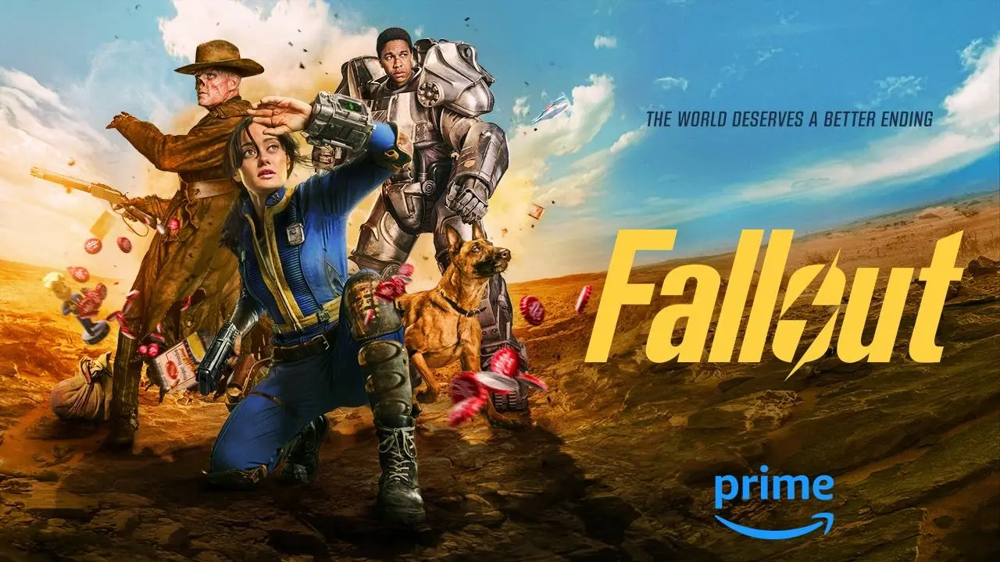

Очередной перенос и обзор: вышел сериал по Fallout
Громкая кинопремьера года для геймеров - сериал по Fallout, первая экранизация культовой игровой серии. Сегодня он стал доступен на Amazon Prime Video со всеми восемью эпизодами. Мы собрали ответы на часто задаваемые вопросы перед просмотром.
О чем сериал? Сюжет «Фоллаута» вращается вокруг постапокалиптического мира после ядерной войны. Спустя 200 лет после катастрофы обитатели убежищ вынуждены вернуться в опустошенный мир, сталкиваясь с неожиданными трудностями.Ключевые персонажи, такие как Люси, Максимус и гуль-охотник за головами, сталкиваются с красочной и жестокой вселенной, полной неожиданных поворотов и черного юмора.
Кто создал сериал? Супруги Джонатан Нолан и Лиза Джой стали главными творцами. Помимо сценариста и режиссера Джонатана Нолана, Женева Робертсон-Дуорет и Грэм Вагнер также внесли свой вклад в создание сериала.Главные роли исполняют Элла Пёрнелл, Аарон Мотен и Уолтон Гоггинс, а Тодд Говард занял позицию исполнительного продюсера.
Как связан сериал с играми? Сериал представляет новую историю в мире Fallout, не являясь экранизацией конкретных игровых частей. Он полон отсылок и пасхалок для фанатов, при этом сохраняя оригинальное настроение игр.Каноничен ли сериал? Сериал не изменяет основной сюжетной линии игр, а лишь расширяет уже существующую вселенную Fallout.
Можно ли смотреть сериал без знания игр? Да, сериал представляет самостоятельную историю, понятную и без знания предыдущих игр.Что говорят о сериале? Сериал получил высокие оценки от критиков за сохранение атмосферы и настроения Fallout. Пользовательские отзывы пока отсутствуют.
Будет ли второй сезон? Официального подтверждения нет, но второй сезон упоминается в кинокомиссии Калифорнии.
Перевод на русский язык? На данный момент доступны только субтитры на русском языке.